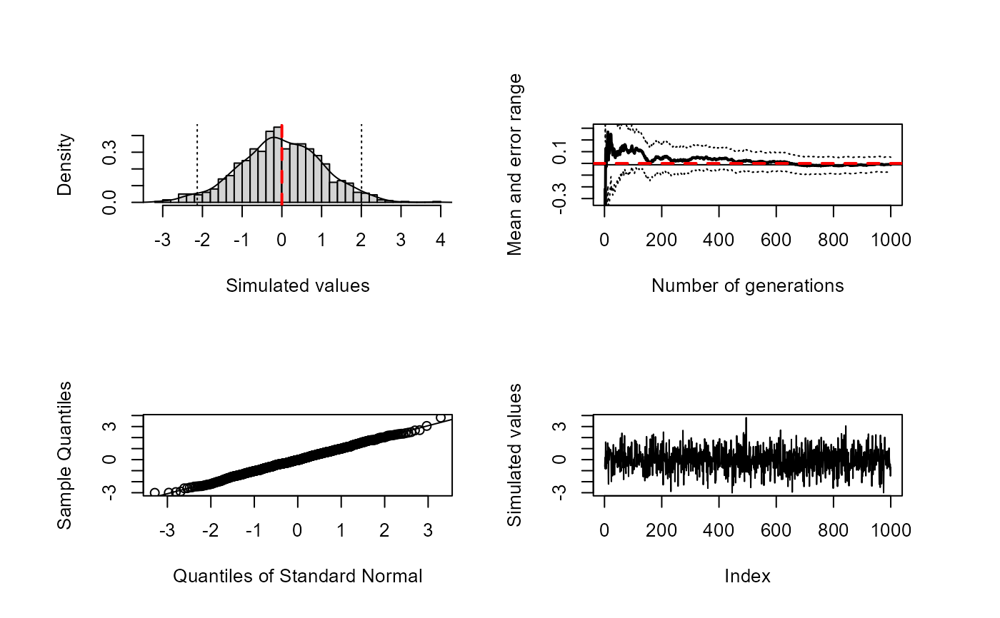
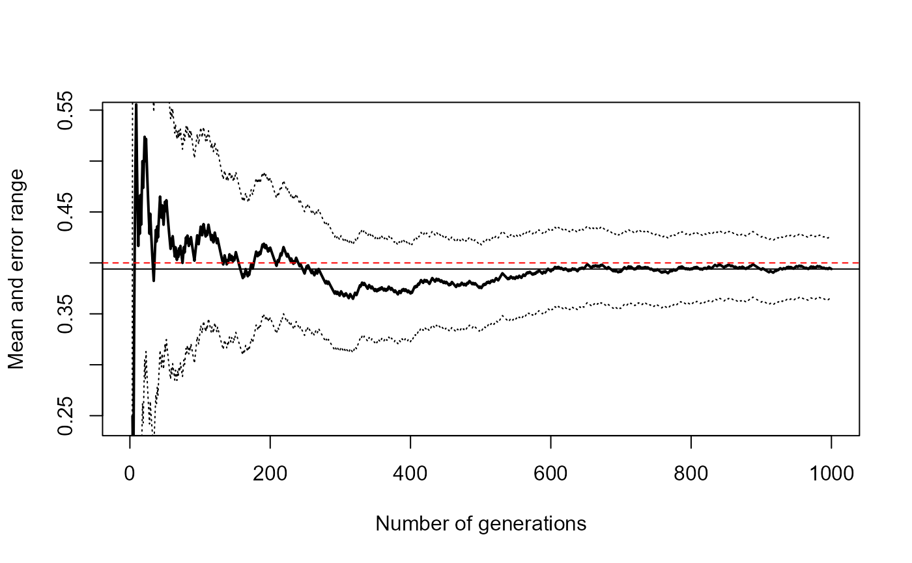
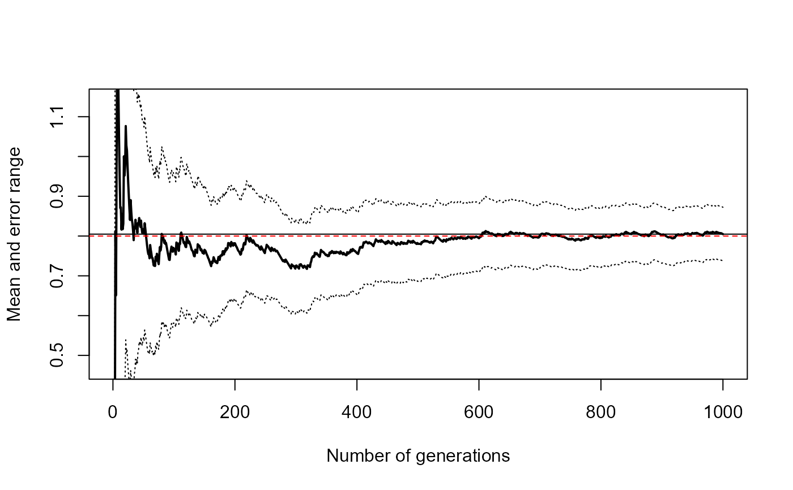

mc.plot() draws the approximation of the distribution, the
convergence plot (by calling conv.plot()), a normal QQ plot
and a sequential plot.
conv.plot() draws a convergence plot.
mc.integral() integrates an one-dimensional function
over a bounded interval using classic Monte-Carlo integration and draws
the corresponding convergence plot.
mc.plot( x, level = 0.95, true.value = NULL, main, omd = c(0.05, 0.95, 0.01, 0.95), ... ) conv.plot( x, level = 0.95, lty = c(conv = 1, value = 1, error = 3), lwd = c(conv = 2, value = 1, error = 1), ylim = NULL, xlab = "Number of generations", ylab = "Mean and error range", ... ) mc.integral(fun, a, b, n, level = 0.95, plot = TRUE, ...)
Arguments
| x | the simulated values. |
|---|---|
| level | the confidence level required. |
| true.value | the theoretical value. |
| main | an overall title for the plot. |
| omd | a vector of the form |
| ... | further arguments passed to other functions (e.g. to |
| lty | a vector of line types (of the form |
| lwd | a vector of line widths (of the form |
| ylim | the y limits of the plot. |
| xlab, ylab | the axis titles. |
| fun | an one-dimensional function to be integrated on [a, b] |
| a, b | the limits of integration (must be finite). |
| n | number of uniform generations. |
| plot | logical; if |
Value
Return, invisibly in the case of plot functions, the approximation by simulation (the arithmetic mean) and the corresponding error range (half width of the confidence interval).
Examples
set.seed(1) teor <- 0 res <- mc.plot(rnorm(1000, mean = teor), true.value = teor)   res #> $approx #> [1] -0.01164814 #> #> $max.error #> [1] 0.06414357 #> set.seed(1) p <- 0.4 res <- conv.plot(rbinom(1000, size = 1, prob = p)) abline(h = p, lty = 2, col = "red") # Theoretical value res #> $approx #> [1] 0.394 #> #> $max.error #> [1] 0.0303005 #> fun <- function(x) ifelse((x > 0) & (x < 1), 4 * x^4, 0) curve(fun, 0, 1) abline(h = 0, lty = 2) abline(v = c(0, 1), lty = 2)set.seed(1) mc.integral(fun, 0, 1, 1000) #> $approx #> [1] 0.8048108 #> #> $max.error #> [1] 0.06752324 #> abline(h = 4/5, lty = 2, col = "red") # Theoretical value  set.seed(1) mc.integral(fun, 0, 1, 5000, plot = FALSE) #> $approx #> [1] 0.8142206 #> #> $max.error #> [1] 0.03028194 #>